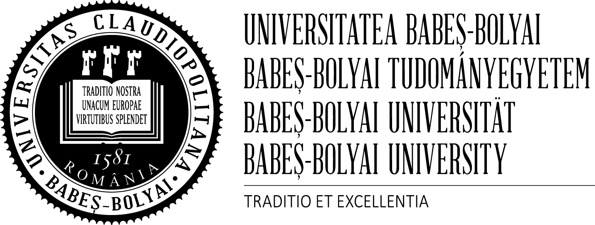
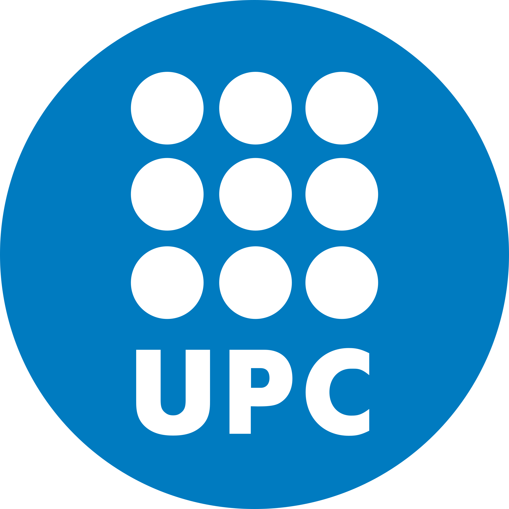
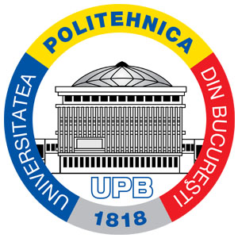

Work Experience
April 2025 — Present
Computer Vision Software Engineer
dotLumen • Cluj-Napoca, Romania
February 2024 — August 2024
Research Intern
National Institute of Informatics • Tokyo, Japan
- Worked under the supervision of Prof. Akihiro Sugimoto on Master's thesis project
- Extended the rendering pipeline for 3D Gaussian Splatting for more efficient rendering
- Implemented traditional computer graphics techniques for splat rendering
December 2022 — January 2024
Research Intern
Universitat Politecnica de Catalunya • Barcelona, Spain
- Research project in collaboration with HP
- Geometry processing for high-precision 3D printers
- Implemented various functionalities, focusing on mesh properties computation
October 2018 — July 2022
C++ Developer - X-Ray Imaging
Accent Pro 2000 • Magurele, Romania
- Worked on solving inverse problems in 3D X-ray tomography using CUDA and VTK
- Developed numerical simulations in C++ to validate detector geometry
- Developed a complete material identification pipeline, from sensor data acquisition to determining material properties
Skills
Languages
C++, CUDA, Python, GLSL
Frameworks & APIs
OpenGL, VTK, PyTorch
Areas
Computer Graphics, GPGPU, Neural Rendering, Medical Imaging
Education

MA Digital Interactive Arts
Babes-Bolyai University

MSc Computer Graphics & VR
UPC BarcelonaTech

BEng Systems Engineering
Politehnica University of Bucharest